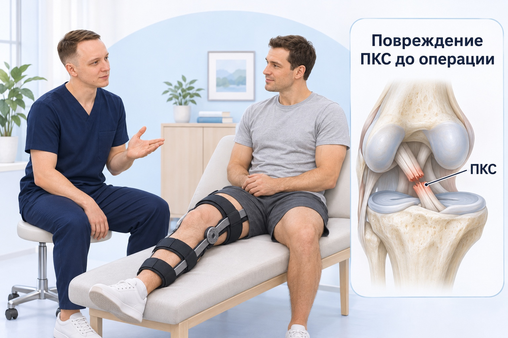
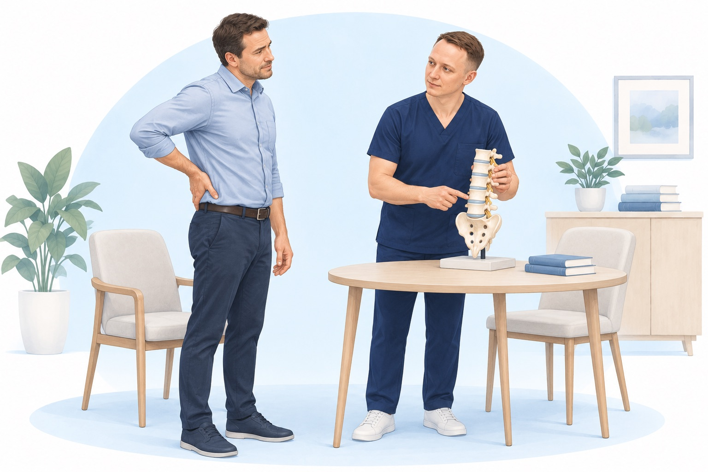
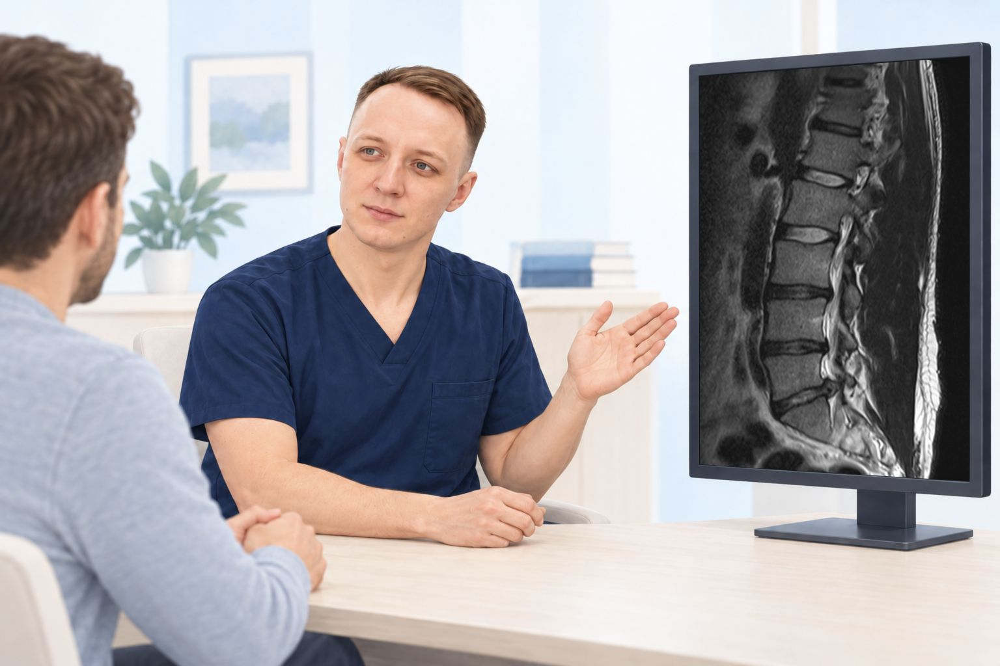
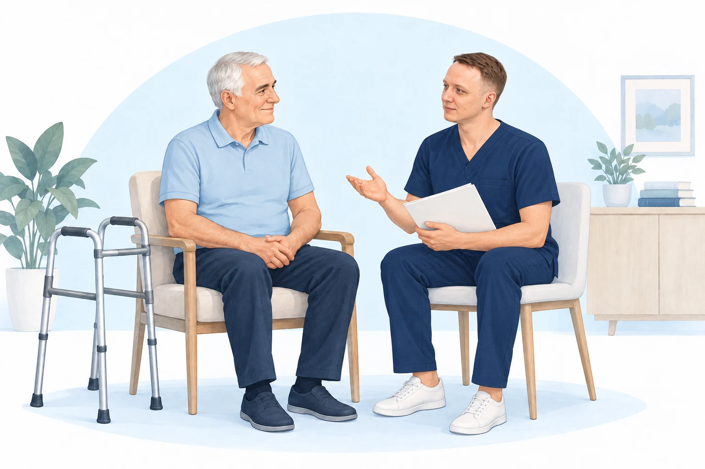

Восстановление колена
Повреждение мениска
Упражнения, постепенное возвращение к нагрузкам, индивидуальный план восстановления и персональная памятка.
Читать статьюПонятно о восстановлении
Объясняю обследования и восстановление: от разбора МРТ и первых вопросов после операции до понятного плана и возвращения к привычным делам.
Восстановление колена
Упражнения, постепенное возвращение к нагрузкам, индивидуальный план восстановления и персональная памятка.
Читать статью
После операции на колене
От первых послеоперационных задач до возвращения в спорт: упражнения, индивидуальный план и персональная памятка.
Читать статью
Активная реабилитация
Как подобрать нагрузку, оценивать результат занятий и продолжать восстановление дома с персональной памяткой.
Читать статью
Разбор обследований
Что означают грыжи, протрузии, изменения дисков и мышц. Как сопоставить снимки с жалобами и составить индивидуальный план восстановления.
Читать статью
После эндопротезирования
С чего начать после выписки, как определяем цели и нагрузку, проверяем прогресс и составляем персональную памятку.
Читать статью